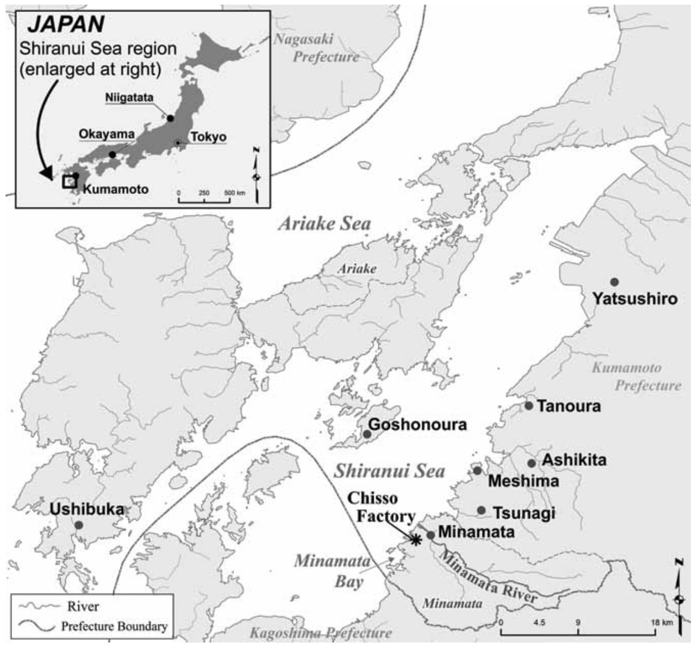

6 Marine metals
They are conservatie pollutants
Not subject to bacterial attack
Plants and animals vary in their ability to regulate their metal content.
Most can do so over a limited range – metals not excreted remain in the body and accumulate with continued exposure – bioaccumulation
Animals that consume bioaccumulators have a diet enriched with conservative contaminants = biomagnification
6.1 Essential and non-essential metals
6.2 Impacts of Marine metals
6.3 Case Studies
6.3.1 The Fal Estuary, Cornwall, UK
The Fal Estuary in southwest England has been contaminated by copper, zinc, arsenic, and tin from over 2,000 years of tin and copper mining in the surrounding area, with peak industrial activity in the 18th–19th centuries. It remains one of the most metal-contaminated estuaries in Europe. (rainbow2020?)
Organism Level
The amphipod crustacean Corophium volutator and the bivalve Mytilus edulis (the common mussel) show measurable physiological stress responses. Mussels in the Fal accumulate copper concentrations in their tissues orders of magnitude above background levels, triggering detoxification pathways involving metallothionein proteins. Elevated copper disrupts enzyme function, impairs reproduction, and causes gill damage. Studies have also found reduced fertilisation success and larval abnormalities in invertebrates exposed to Fal sediment porewater.
Community Level
Benthic invertebrate communities in the upper estuary show significantly reduced species richness compared to reference estuaries. Metal-sensitive taxa — particularly certain polychaete worms and amphipods — are absent or greatly reduced, while tolerant species such as the polychaete Nereis diversicolor dominate. This species is notably metal-tolerant and has evolved local adaptations to elevated copper, effectively making it a pollution indicator. The result is a simplified, low-diversity community with altered trophic structure. (Bryan et al. 1987)
Ecosystem Level
The loss of diverse filter feeders and deposit feeders alters sediment bioturbation and nutrient cycling. Reduced bioturbation means metals remain more concentrated in surface sediments rather than being mixed and diluted — a feedback loop that maintains contamination. The food web is compressed, with fewer trophic pathways available to higher consumers such as wading birds and flatfish. Ecosystem function — particularly secondary production and organic matter processing — is measurably impaired relative to clean estuaries.
6.3.2 Minamata Bay, Japan
This is arguably the most important case study in the history of marine pollution in part because of its stature as a case of environmental social justice (Yorifuji, n.d.). Between the 1930s and 1968, the Chisso chemical plant discharged mercury-laden wastewater into Minamata Bay. Mercury methylated in the sediments to form methylmercury — a highly bioavailable and neurotoxic form — leading to catastrophic consequences.
Organism Level
Fish and shellfish accumulated methylmercury to extreme levels through direct uptake and metabolic processing. Mugil spp. (mullet) and shellfish such as oysters and clams were found with mercury concentrations exceeding 10–50 mg/kg wet weight — hundreds of times above safe thresholds. At the cellular level, methylmercury crosses the blood-brain barrier and binds to sulfhydryl groups in proteins, disrupting neurological function. Affected fish displayed erratic swimming behaviour (“dancing disease”), loss of coordination, and death. Cats fed on fish scraps from the bay exhibited convulsions and mass mortality — an early warning sign that went unheeded.
Community Level
Fish and invertebrate communities in the bay collapsed. Pelagic and demersal fish populations declined sharply due to direct toxicity and reproductive failure. The food web was restructured as apex predators were removed and prey populations fluctuated unpredictably. Seabird populations feeding on bay fish also declined. The classic hallmark of mercury contamination — biomagnification — meant that organisms at higher trophic levels suffered disproportionately, collapsing predator-prey relationships across the community.
Ecosystem Level
Mercury persisted in sediments for decades, acting as a long-term internal source of contamination even after discharges ceased. Ecosystem recovery was extremely slow due to continued methylation and re-release of mercury from the sediment pool. The cascading loss of consumers altered primary production dynamics, as reduced grazing pressure on phytoplankton led to imbalanced algal growth. At the human level, over 2,000 people were officially diagnosed with “Minamata disease” (severe methylmercury poisoning), with thousands more affected. The case directly led to the Minamata Convention on Mercury (2013), a global treaty to control mercury emissions.
6.4 Summary Table
| Fal Estuary | Minamata Bay | |
|---|---|---|
| Metal | Cu, Zn, As, Sn | Hg (as methylmercury) |
| Source | Historic mining runoff | Industrial wastewater |
| Organism | Tissue accumulation, reproductive failure, gill damage | Neurological damage, mass mortality in fish and cats |
| Community | Reduced diversity, metal-tolerant dominants | Food web collapse, biomagnification to apex predators |
| Ecosystem | Altered nutrient cycling, compressed food web | Sediment legacy contamination, slow recovery, human disease |
Together, these cases illustrate both the chronic, sub-lethal nature of mining-derived contamination and the acute, ecosystem-wide devastation that can result from industrial mercury discharge — and the importance of understanding impacts at every level of biological organisation.